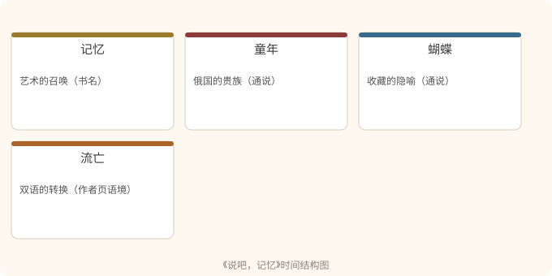

说吧，记忆
一、基本信息
| 作者 | 纳博科夫 |
|---|---|
| 成书/出版 | 1966年（作者页注记：Britannica——说吧，记忆（1966）——自传） Vladimir Nabokov — Encyclopaedia Britannica（百科全书） |
| 国别/地区 | 美国 |
| 时代 | 近代 · 20世纪60年代 |
| 体裁 | 自传 |
| 语言 | 英语（俄译） |

《说吧，记忆》时间结构图（主题·结构图）
二、创作背景
作者页注记：说吧，记忆——'自传（Britannica 列举 Speak, Memory）'。
Britannica：纳博科夫——《洛丽塔》作者（作者页交叉）。
题材（通说待核）：俄国贵族童年的记忆百科——蝴蝶、象棋与流亡。
三、内容脉络
（通说待核）十五篇记忆的'主题变奏'（通说待核——章节结构）。
（通说待核）'说吧，记忆'：时间的召唤。
四、主要人物表
| 人物 | 身份 | 说明 |
|---|---|---|
| 纳博科夫 | 回忆者 | （通说待核） |
五、主题与艺术特点
- 记忆的艺术化（通说待核）。
- 流亡与母语（作者页语境）。
- '时间的迷宫'（通说待核）。
六、影响与评论
- Britannica：Speak, Memory（作者页注记）。
Vladimir Nabokov — Encyclopaedia Britannica（百科全书） - Britannica：《洛丽塔》1955（作者页交叉）。
Vladimir Nabokov — Encyclopaedia Britannica（百科全书）
七、阅读建议
难点
- 记忆的互文。
- 双语写作的转换。
- 《说吧，记忆》中译本（人民文学等——通说待核）。
- 英文原版。
纳博科夫自传首选；与《洛丽塔》对读。
八、待核实
- 章节结构核对（通说）。
- 1966年出版（Harper & Row说）待核。
- 1951年英文初版 Conclusive Evidence 待核。